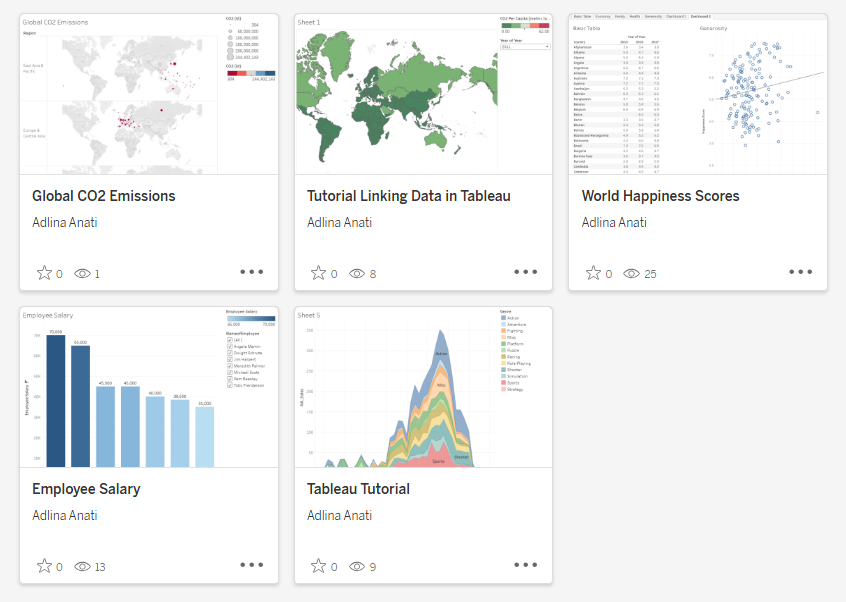
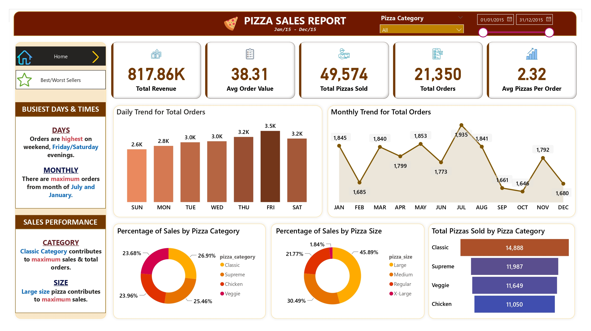

In this project, I analyzed a Telecom company’s churn dataset, which includes customer activity data
and a churn label indicating whether a customer canceled their subscription.
The goal was to identify key factors contributing to customer churn and provide recommendations to improve retention.
Explore my Streamlit app, built with Python to explore data interactively.
As a beginner in data analysis, this projects demonstrates my dedication to
learning and applying data analysis skills..

Take a look at my Tableau dashboards here and explore the visual insights I've created!.

Explore this dynamic and interactive Excel dashboard that reveals hidden insights into bike sales,
customer demographics, income trends, and commuting patterns.

I’m still learning Power BI, and this is my dashboards collection.
It’s simple, interactive, and helps turn data into clear insights. Check it out!